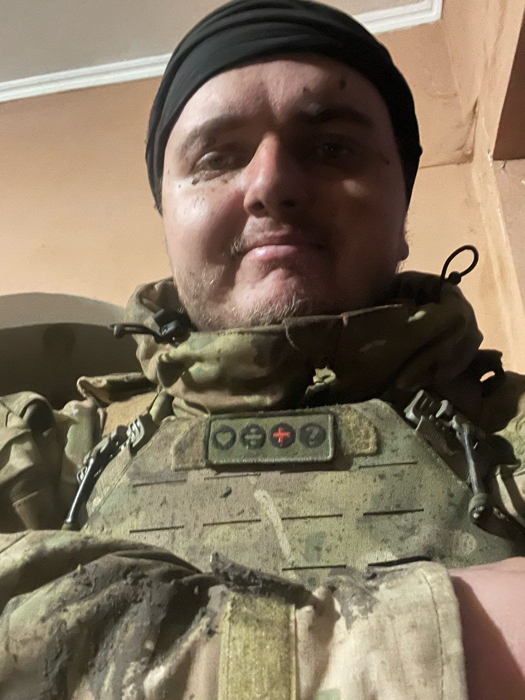
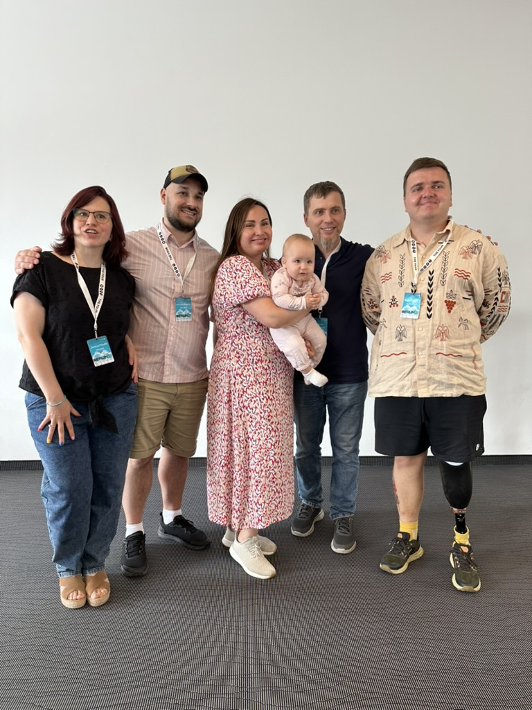

Бути поруч із тими, хто повертається з війни. Я — духовний тил ветеранів України.

Мене звати Олександр. Під час навчання в університеті я прийшов до Христа завдяки служінню CRU — один зі співробітників місії поділився зі мною Євангелієм. Цей момент став для мене духовним народженням і повністю змінив напрямок мого життя.
Я деякий час працював у сфері продажів. Хоча війна на Донбасі вже тривала, життя для багатьох залишалося звичним. Але повномасштабне вторгнення 2022 року змінило все. Мене мобілізували до Збройних Сил України, і я служив розвідником у штурмовій бригаді. Під час одного з бойових завдань я отримав важке поранення і втратив кінцівку.
Під час відновлення та реабілітації я познайомився з багатьма побратимами, які також пережили втрати та перебували в пошуку сенсу, надії й спільноти. Бог почав глибоко працювати в моєму серці, і я зрозумів, що не можу мовчати — я хочу йти поруч з тими, хто страждає.
Саме тому я приєднався до місії «Україна для Христа» (CRU), щоб ділитися Євангелієм із ветеранами — тими, хто поранений тілом і душею, але відкритий до істини. Лише Христос може зцілити найглибші рани.
Донести Євангеліє до ветеранів через стосунки, свідчення та служіння.
Допомогти їм зростати у вірі, знайти сенс, спокій та стабільність.
Надихати ставати світлом та прикладом відновлення у своїх громадах.
Сьогодні в Україні понад 1,3 мільйона ветеранів — багато з них мають глибокі зовнішні та внутрішні рани. Після війни ця цифра може зрости до 5–6 мільйонів.
Саме тому я долучився до місії «Україна для Христа» — щоб бути поруч, слухати їх історії й вказувати на Того, хто здатен відновити.
Ветеранів сьогодні
Потенційно з родинами
Я приношу корисні речі, але найголовніше — час для вислуховування та спільної молитви там, де біль найгостріший.

Це наша команда Military Ministry. Більшість із нас особисто були дотичні до війни, пройшли через втрати, випробування та військову службу. Ми знаємо, що таке біль, і саме тому об'єднали свої зусилля.
Зараз ми разом будуємо міцне служіння для ветеранів. Наша мета — стати надійним духовним тилом, підтримкою та дружньою спільнотою для кожного, хто повертається з фронту, щоб допомогти їм знайти надію та зцілення у Христі.


Данік — колишній військовополонений. Він отримав тяжкі травми у 19 років. Сьогодні йому 23, він веде активне життя і завдяки Богу має християнську спільноту навколо себе. Я вдячний за дружбу з ним.
Ефективне служіння можливе лише в команді. Ви стаєте надійним фінансовим та молитовним тилом місії, поки я працюю безпосередньо в полі.
"Тоді Він казав Своїм учням: Жниво справді велике, та робітників мало; тож благайте Господаря жнива, щоб на жниво Своє Він робітників вислав."
(Від Матвія 9:37-38)
Місія «Україна для Христа» функціонує як організація, співробітники якої повністю покладаються на Бога в забезпеченні свого служіння. Тому до обов’язку кожного співробітника входить пошук партнерів по служінню, які б регулярно жертвували на його власне служіння.
На сьогоднішній день в місії CRU працюють близько 19 000 співробітників по всьому світу. Більшість з них знаходять підтримку свого служіння за допомогою окремих людей. Як виявилося, більшість християн віддають перевагу жертвувати гроші на конкретне служіння, а не у загальний фонд. Вклад у власне служіння місіонера допомагає бачити конкретні результати участі у благовісті.
Моє служіння повністю фінансується завдяки щедрій підтримці таких людей, як ви. Стаючи моїм фінансовим партнерoм, ви безпосередньо інвестуєте у духовне та психологічне відновлення ветеранів України. Чи готові ви стати частиною моєї команди?
В меню "Платежі" (у Monobank: "Платіж за IBAN") введіть рахунок:
UA063052990000026004045007863
Система автоматично знайде отримувача. Перевірте:
Місія "Україна для Христа"
У полі «Коментар до платежу» (або «Залучив ПІБ») обов'язково вкажіть мій внутрішній номер в місії (можна скопіювати його нижче):
5544
Вкажіть бажану суму пожертви. Призначення платежу зазвичай формується автоматично.
Підтвердіть платіж.
Щиро дякуємо за вашу підтримку!
Для міжнародних банківських карток
"Якщо Господь спонукає Вас прийняти позитивне рішення, я буду вдячний за вашу першу пожертву вже сьогодні."
Кожного місяця я надсилаю молитовні листи з новинами служіння. Якщо ви хотіли б отримувати такі листи і молитися за конкретні потреби, підпишіться на мої оновлення.

Свіжі оновлення з мого служіння. Роздуми, історії та плани.
Читати лист